Thailand Trav-E-Logs©
| Eastern Thailand | 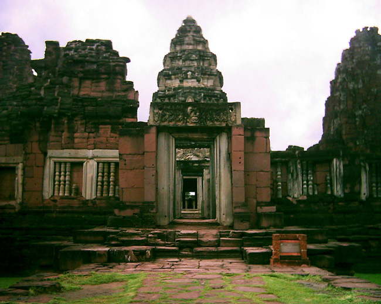 |
| back: Sangkhlaburi | Wat Prasat Phimai near Khorat. |
================================= Traveled East from Bangkok by train to Khorat (Nakhon Ratchasima) and Buriram to visit several historic Khmer sights dating back to the 10th century. Reached Prasat Hin Khao Phanom Rung by southbound bus from Buriram, then hired motorbike taxi for the final assault. Wat Prasat Phimai was easy to reach, as regular bus service makes the journey from Khorat in just over an hour. =================================
September 12 - 14, 2003
PHANOM RUNG
|
Prasat Hin Khao Phanom Rung (Temple at Stone-Hill Big-Hill) sits at the top of a volcanic hill. It is the largest Khmer complex in Thailand, and faces due east, not only in the direction of the Angkor capital, but similar to most Hindu temples. Construction began in the 10th century; it is considered to be the best restored Khmer complex in Thailand. Photos, clockwise from right: Prasat Towers above the Temple; Main Naga Bridge; Bull Image, Nandi?; Note the Waist Sack on this Khmer Sculpture; Prasat. 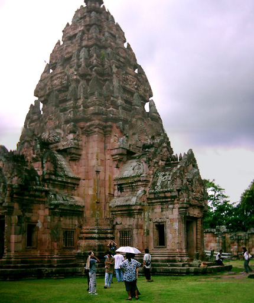 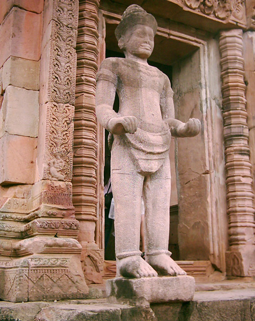 |
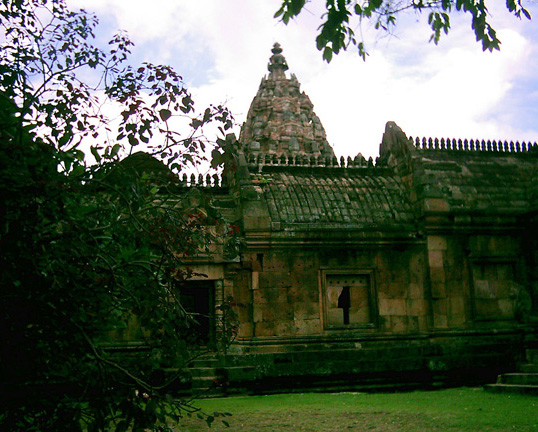 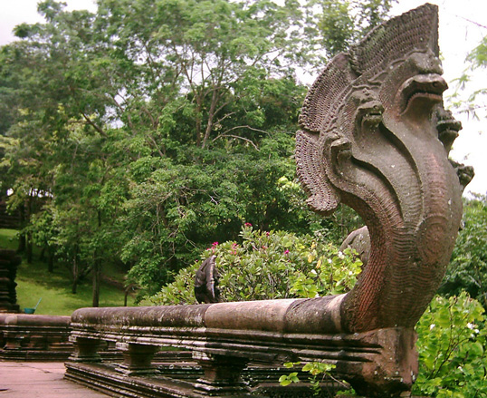 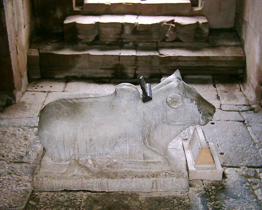 |
KHORAT (Nakhon Ratchasima)
|
Wat Prasat Phimai is located some 25 miles out of Khorat, but was built on a trade route of the Khmer Empire at Angkor in the late 10th century. Although construction was Hindu - Mahayana Buddhist, some 100 years before the crowning glory of Angkor Wat, the main temple faces southeast. Its restoration is considered to be second only to Prasat Hin Khao Phanom Rung discussed above. The Tourist Information complex (including museum) is free, and one of the best seen in a foreign country. All displays bilingual, included geography, archeology, audiovisual, and how the area fit into the big picture. Photos, clockwise from right: Main structure; exquisite stone carvings; Dancing Shiva on pillar base; Humanized demon in the Museum; More Carving Details. 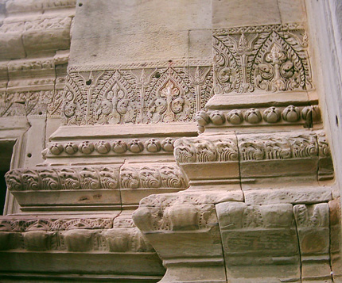 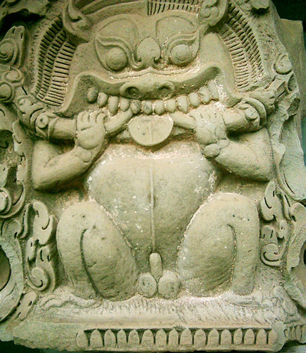 | 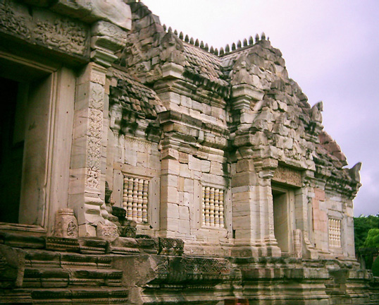 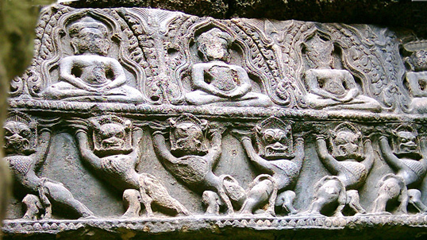 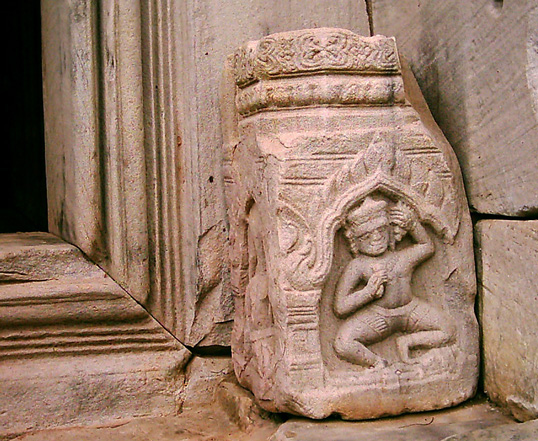 |
Enjoy!
Bill
------------------------------
Email me at: "juno.com" preceded by an "@" and "dancer2SEAsia"
"The traveler discovers that people are beautiful. It's the governments that are evil."
| next: Lopburi |
| back: Sangkhlaburi |